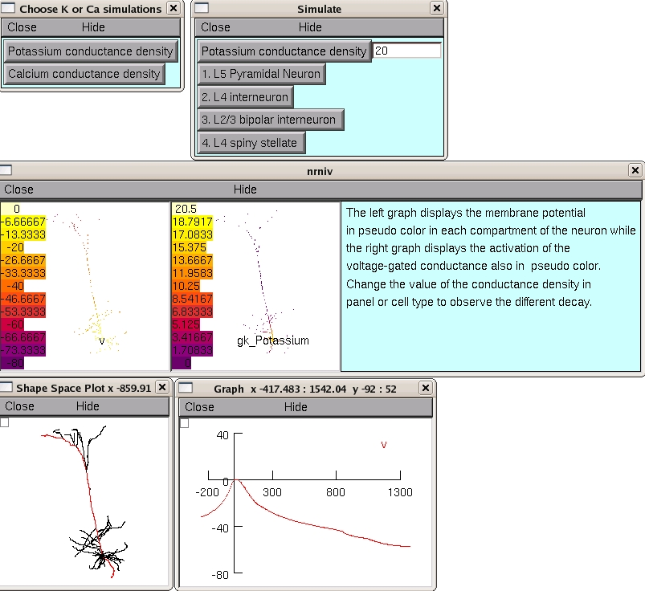

This is the readme file for the model associated with the paper: Bar-Yehuda D, Korngreen A (2008) Space clamp problems when voltage clamping neurons expressing voltage-gated conductances. J Neurophysiol You can auto-launch from ModelDB (after you have installed NEURON) and then choose Potassium or Calcium conductance simulations to generate figures associated with Figures 1 and 4. You can further create graphs of sample spatial voltage values by selecting from the NEURON Main Menu "Graph" -> "Shape Plot" and then drag the mouse from the box in the upper left corner of the graph to select "Space plot" from the pop-up menu. Finally, drag the mouse from the lower extremity of the cell to the top. When you release the mouse button a graph of the voltage along the path you selected through the cell appears (see bottom of below figure which was created after Potassium and then the L5 Pyramidal Neuron were selected and then after the run (takes about 20 seconds) the above shape plot procedure was followed):  Alternatively you can run the files manually. The demo code contains two simulations. The "potassium.hoc" file contains code simulating parts of figure 1. The "calcium.hoc" file contains code simulating parts of figure 4. To run the simulations you will have to first compile the MOD files in the SpaceClampDemo directory (nrnivmodl under Linux, mknrndll under windows, or drag and drop the SpaceClampDemo folder onto the mknrndll icon under MAC OS X). To run the simulations simply run one of the above HOC files, or the mosinit.hoc file. In windows just double click on the icon, in Linux invoke the "nrngui filename -" command, and under the MAC drag and drop the mosinit.hoc file onto the nrngui icon. All simulations will generate two graphs, one displaying the membrane potential in pseudo color in each compartment of the neuron and one displaying the activation of the voltage-gated conductance also in pseudo color.